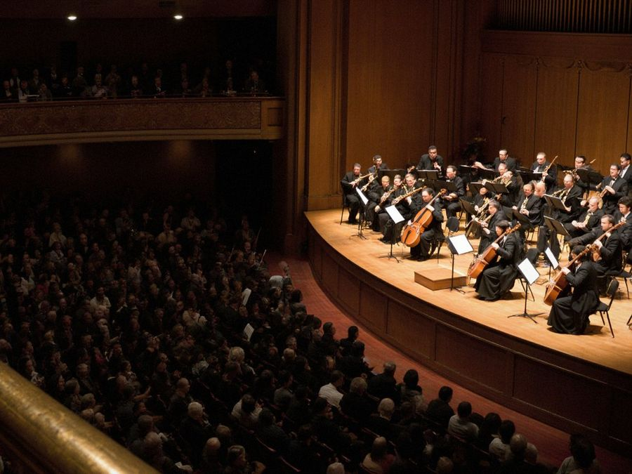

Orchestra
The Talas Symphony Orchestra was formed in 1974 for the opening of the new hall, from the radio orchestra and the conservatory's teachers. Fifty-two players today, with four folk instruments on the strength since 1992. The orchestra records film and television music for IradOne and tours the district towns each spring.

Players
Conductors
Bakyt Omurzakov · chief conductor since 2014
Gulnara Isaeva · second conductor
First violinsElmira Sadykova · leader
Igor Shevchenko
Aidai Nurlanova
Tatyana Kim
Nurlan Mambetov
Asel Jumabaeva
Second violinsAinura Toktomusheva
Sergei Lim
Meerim Kasymova
Dastan Usenov
ViolasOlga Petrenko
Bolot Akmatov
Zhyldyz Alieva
CellosMarat Sydykov
Natalya Ten
Kanykei Bekova
BassesViktor Ogai
Almaz Toroev
WindsAibek Sultanov · flute
Galina Pak · oboe
Ruslan Ibraev · clarinet
Erlan Kadyrov · bassoon
BrassTimur Asanov · horn
Daniyar Beishenov · horn
Andrei Tsoi · trumpet
Kubat Sharshenov · trombone
Percussion and folkNurdin Abdraev · timpani
Asylbek Osmonov · dool and percussion
Gulmira Japarova · komuz
Ulan Toktosunov · kyl-kyak